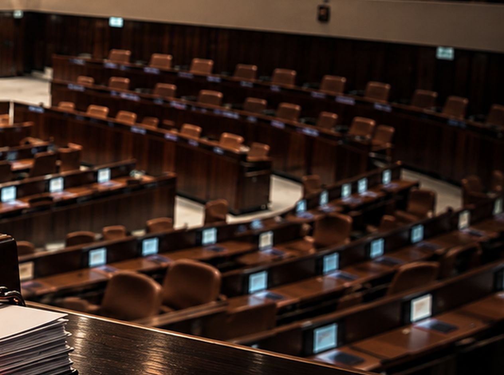

הידעת? חבר כנסת לא יכול להניח חוק על שולחן הכנסת.
מערכת החקיקה של הכנסת נבנתה בשביל נבחרי הציבור, אבל את ההרשאות בה מחזיקים רק היועצים המשפטיים. כח התערבות פועל להחזיר את החקיקה לידי חברי הכנסת.
תשמעו את זה מבפנים.
נגה ארבל, ראש תחום חקיקה בכח התערבות, מסבירה בדקה אחת איך נבחרי הציבור הפכו לצופים במערכת שנבנתה בשבילם.

אפס פעמים.
זה מספר הפעמים שהמילים "היועץ המשפטי של הכנסת" מופיעות בתקנון הכנסת. ובכל זאת, הם אלה שמחזיקים את הרשאות החקיקה, וחבר כנסת שכותב חוק מעביר אותו לעיונם.
כך נחזיר את החקיקה
לנבחרי הציבור.
כל תומך מוסיף קול. הקולות הופכים ללחץ ממוקד על יו״ר הכנסת, ומשם לשינוי.
-
חשיפה
נביא לכל בית בישראל את מה שקורה בתוך מערכת החקיקה של הכנסת.
-
פנייה ישירה
כל תומך שולח פנייה אישית ליו״ר הכנסת, ואנחנו פועלים מול הגורמים הרשמיים.
-
עד הסוף
לא נעצור עד שחברי הכנסת יקבלו בחזרה את הכלים לחוקק בעצמם.
שקל אחד ביום.
זה כל מה שצריך כדי להיות חלק מהמאבק. הצטרפו לתומכי כח התערבות ב-₪30 בחודש, ותקבלו עדכון ראשון על כל צעד במהלך, ישירות דרך הניוזלטר שלנו.
₪30 בחודש · הוראת קבע
מיד אחרי התרומה ייפתח לכם וואטסאפ עם פנייה מוכנה ליו״ר הכנסת, אמיר אוחנה. נשאר רק לשלוח.
מי מוביל את המהלך

אודליה קדמי
ראש תחום ביטחון אישי

תמיר דורטל
מייסד, ראש תחום כלכלה

טל קופל
ראש תחום חינוך ואתיקה

עו״ד תמר ארבל
ראש תחום משפט

נגה ארבל
ראש תחום חקיקה

ד״ר אמיר רובין
ראש תחום רפואה
התשלום מאובטח ומתבצע דרך מערכת Peach.